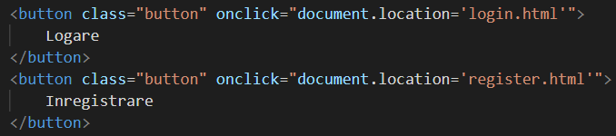

3. Pagina Principala
Aceasta pagina are un rol informativ privind pariurile ce s-au terminat si viitoarele pariuri la care utilizatorii conectati pot participa.
Prin intermediul acestei pagini, utilizatorul aplicatiei se poate inregistra/loga.
Aceste butoane ne vor muta pe pagina de logare, respectiv pe pagina de inregistrare.

4. Pagina de Logare
Aceasta pagina are rolul de a permite utilizatorilor deja inregistrati sa se connecteze la aplicatie.


5. Pagina de Inregistrare
Aceasta pagina are rolul de a permite utilizatorilor sa isi creeze un cont in aplicatie.


6. Pagina Utilizatorul
Aceasta pagina are rolul de a permite utilizatorilor sa vizioneze lista de pariuri din trecut la care a participat.
Deasemenea se vor putea inscrie la pariuri nefinalizate inca prin intermediul acesteti pagini.
7. Pagina Sobolanului
Aceasta pagina are rolul de a permite utilizatorilor sa vizoalizeze istoricul unui anumit sobolan.